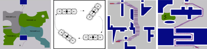
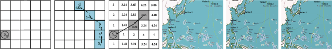
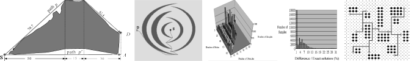
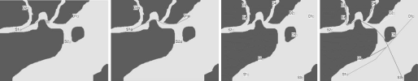

When Ki-Yin Chang from the Department of Merchant Marine at the National Taiwan Ocean University visited my lab for a year in 2002,
we did some work on a variant of
Dijkstra's algorithm on a 2D grid graph with diagonal connections,
and some variations thereof. This led to four journal papers in
three different application domains (navigation,
design automation, and mechatronics) where this apparently
was a new and interesting idea.

Gene Eu Jan, Ki-Yin Chang, and
Ian Parberry,
"Optimal Path Planning for Mobile Robot Navigation",
IEEE/ASME Transactions on Mechatronics, Vol. 13, No. 4, pp. 451-460, 2008.
Abstract
Some optimal path planning algorithms for navigatingmobile
rectangular robot among obstacles and weighted regions
are presented. The approach is based on a higher geometry maze
routing algorithm. Starting from a top view of a workspace with
obstacles, the so-called free workspace is first obtained by virtually
expanding the obstacles in the image. After that, an 8-geomerty
maze routing algorithm is applied to obtain an optimal collisionfree
path with linear time and space complexities. The proposed
methods cannot only search an optimal path among various terrains
but also find an optimal path for the 2-D piano mover’s
problem with 3 DOF. Furthermore, the algorithm can be easily extended
to the dynamic collision avoidance problem among multiple
autonomous robots or path planning in the 3-D space.

Ki-Yin Chang, Gene Eu Jan, Chien-Min Su, and
Ian Parberry,
"Optimal Interceptions on
Two-Dimensional Grids
with Obstacles",
Journal of Navigation, Vol. 61, pp. 31-43, 2008.
Abstract
This article presents efficient and practical methods for path planning of optimal interceptions
on two-dimensional grids with obstacles, such as raster charts or non-distorted digital
maps. The proposed methods search for optimal paths from sources to multiple movingtargets
by a novel higher geometry wave propagation scheme in the grids, instead of the
traditional vector scheme in the graphs. By introducing a time-matching scheme, the optimal
interception paths from sources to all the moving-targets are obtained among the combinations
with linear time and space complexities. Two optimal path planning methods for
multiple one-to-one interceptions, the MIN-MAX and MIN-AVG, are applied to emulate
the real routing.

Gene Eu Jan, Ki-Yin Chang, Su Gao, and
Ian Parberry,
"A 4-Geometry Maze Router and Its
Application on Multiterminal Nets",
ACM Transactions on Design Automation of Electronic Systems, Vol. 10, No. 1, pp. 116-135, 2005.
Abstract
The maze routing problem is to find an optimal path between a given pair of cells on a grid plane.
Lee’s algorithm and its variants, probably the most widely used maze routing method, fails to
work in the 4-geometry of the grid plane. Our algorithm solves this problem by using a suitable
data structure for uniform wave propagation in the 4-geometry, 8-geometry, etc. The algorithm
guarantees finding an optimal path if it exists and has linear time and space complexities.
Next, to solve the obstacle-avoiding rectilinear and 4-geometry Steiner tree problems, a heuristic
algorithm is presented. The algorithm utilizes a cost accumulation scheme based on the maze
router to determine the Torricelli vertices (points) for improving the quality of multiterminal nets.
Our experimental results show that the algorithm works well in practice. Furthermore, using the
4-geometry router, path lengths can be significantly reduced up to 12\% compared to those in the
rectilinear router.

Ki-Yin Chang, Gene Eu Jan, and
Ian Parberry,
"A Method for Searching Optimal
Routes with Collision Avoidance on
Raster Charts",
Journal of Navigation, Vol. 56, pp. 371-384, 2003.
Abstract
Collision avoidance is an intensive discussion issue for navigation safety. This article introduces
a new routing algorithm for finding optimal routes with collision detection and
avoidance on raster charts or planes. After the required data structure of the raster chart is
initialized, the maze routing algorithm is applied to obtain the particular route of each ship.
Those ships that have potential to collide will be detected by simulating the particular routes
with ship domains. The collision avoidance scheme can be achieved by using the collision area
marking method with collision avoidance rules at sea. The algorithm has linear time and
space complexities, and is sufficiently fast to perform real-time routing on the raster charts.